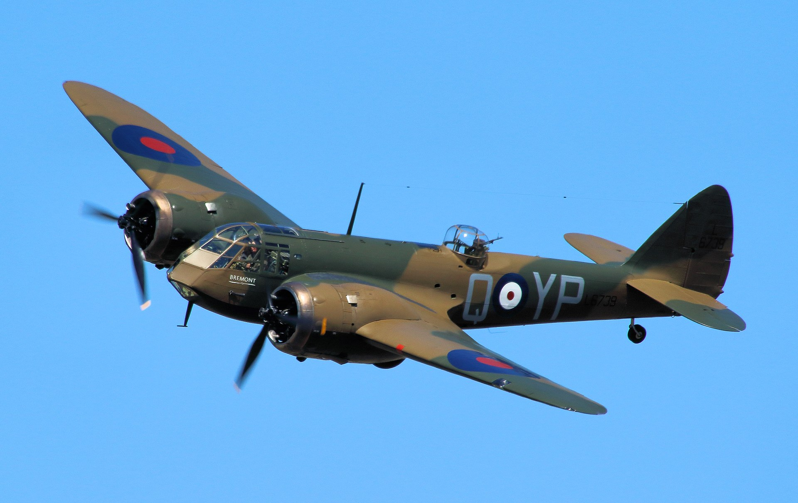
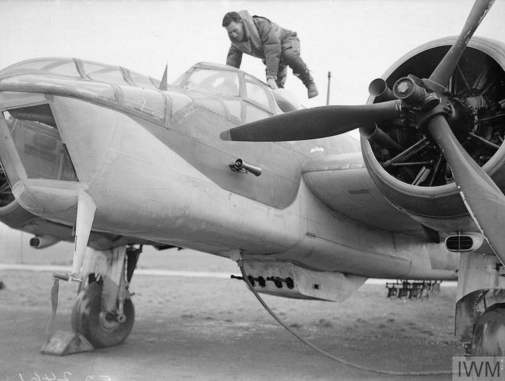
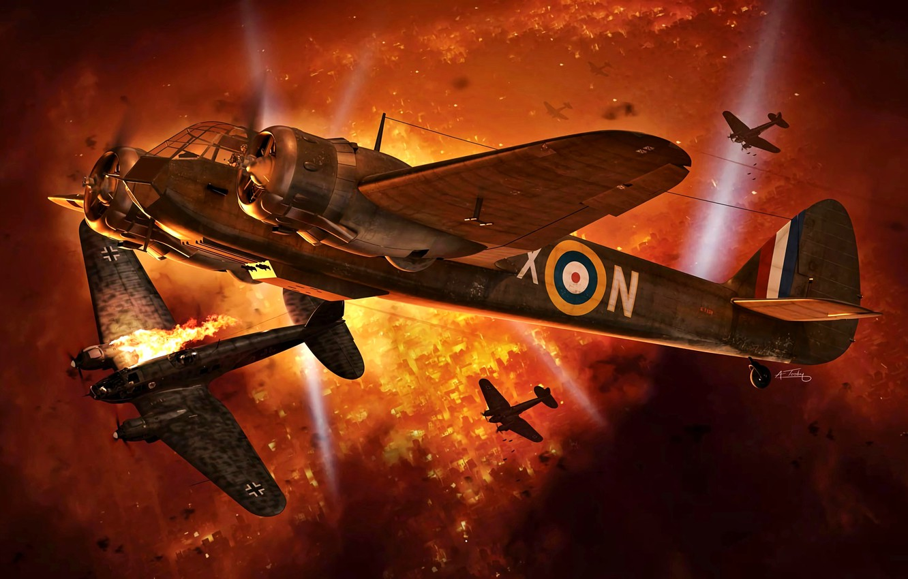
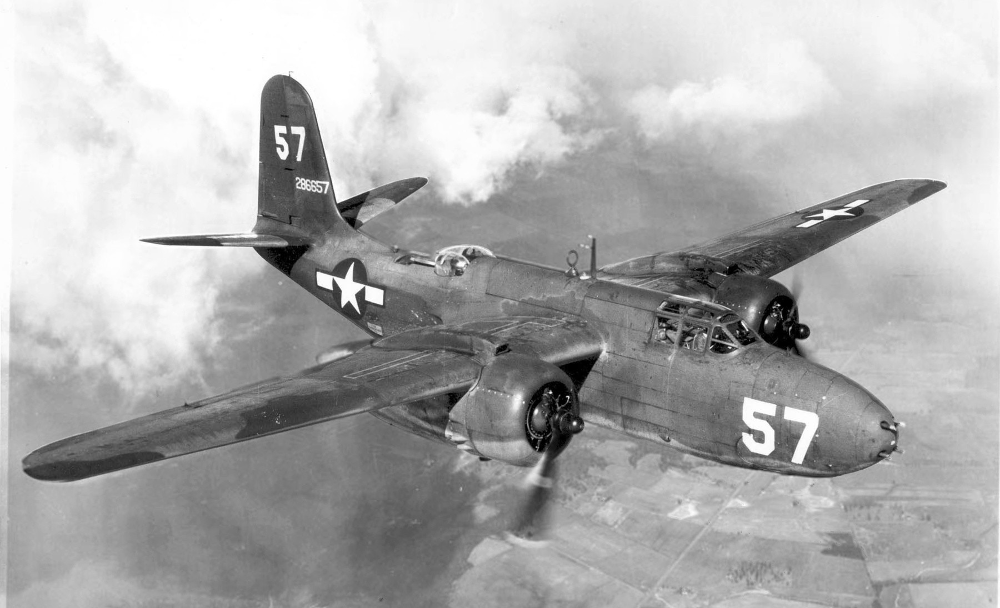
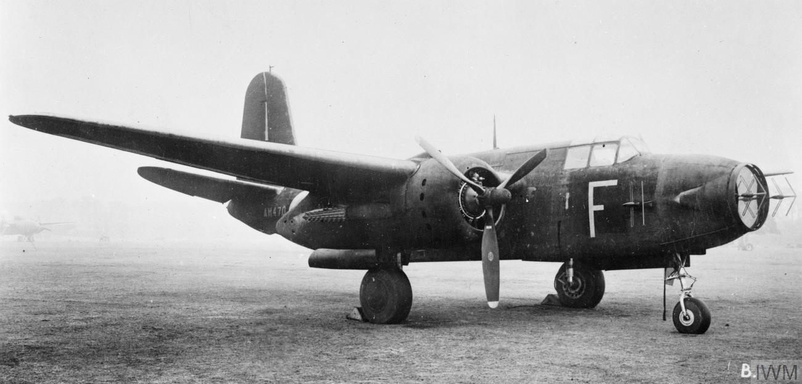
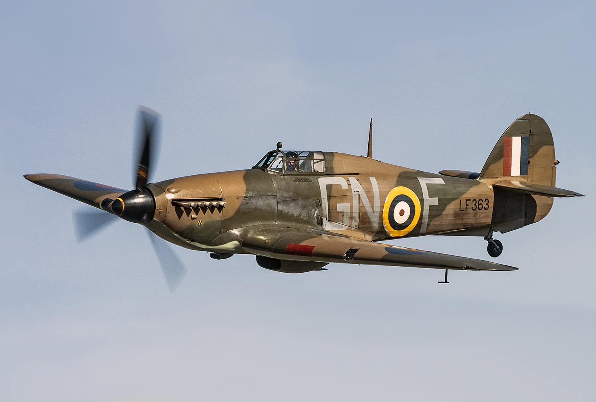

레이더 개발 이야기 (13) - 야간 전투기의 다양한 꼼수
게시: 2022-12-22T06:30:48+09:00
<최초의 Night Kill> 보웬이 만들던 공대공 레이더 AI (Airborne Interception) Mark II는 여태까지 기술했듯이 많은 기술적 문제를 해결하지 못한 상태였지만, 이젠 정말 곧 전쟁이 터진다고 판단한 영국 국방부는 그 미완성인 AI Mk II를 생산하여 30대의 Bristol Blenheim (사진1)에 장착하라는 주문을 냄.

브리스톨 블렌하임은 원래 민간 여객기로 1935년에 개발된 것이었는데, 바로 작년에 복엽 폭격기인 Handley Page Heyford를 최신예 폭격기랍시고 도입했던 영국 공군은 그 단엽기에 전신을 듀랄루민으로 만든 멋진 고속 쌍발 여객기 블렌하임에 홀딱 넘어가서 2년 만에 폭격기로 개조하여 도입했던 기종. 폭격기로서도 그저 그런 성능이었지만 그래도 쌍발 엔진에 장거리 전투반경을 가지고 있었으므로 먼 바다를 정찰하며 필요시 독일 폭격기로부터 아군 수송선을 지키기 위해, 4정의 0.3인치 기관총을 기체 아래에 장착한 장거리 전투기로도 개조되었던 블렌하임(사진2) 이 최초의 야간 전투기로 선정된 것은 놀라운 일은 아니었음. 무엇보다, 레이더 장비와 그 운용사를 싣기 위해서는 폭격기의 넉넉한 공간이 필요했음.

폭격기로서의 블렌하임은 1939년 9월 WW2가 발발한 첫날 독일 해군에 대한 정찰을 위해 독일 영토로 침투한 첫 영국 군용기라는 기록을 세우기도 했는데, 야간 전투기로서의 기록도 세움. 1940년 7월 22일 보름달이 뜬 날, Chain Home 지상 레이더의 유도를 받은 블렌하임 야간 전투기 1대가 독일 폭격기 요격을 위해 날아오름. 그 사이에 AI Mk III로 업그레이드된 레이더에 의존한 블렌하임은 성공적으로 독일 폭격기의 꼬리 위치로 접근. 약 300m 근처까지 접근하자 (이미 알려진 기술적 문제 때문에) 레이더로는 더 이상 추적이 되지 않았고, 설상가상으로 육안으로 보일까말까 하던 폭격기도 사라져버림. 그러나 조종사가 당황하지 않고 달빛에 반사되는 폭격기 날개의 빛을 보기 위해 조금 고도를 높이자 정말 바로 코 앞에 다시 독일 폭격기가 달빛에 또렷이 보였음. 연필같은 모양의 Dornier 17. 드르륵 드르륵 2번 연사하자 도르니에는 불덩이가 되어 바스러짐. (사진3은 상상화인데 도르니에가 아닌 하인켈을 그려놓았음)

이것이 최초의 야간 전투기의 성공적인 kill. 참고로, 미공군 폭격기의 폭격수(bombardier)는 장교였지만 영국 공군의 레이더 운용사는 부사관이었음.
<전파보다는 가시광선> 공대공 레이더인 AI Mk III를 달고 야간 전투기로 개조된 Bristol Blenheim이 최초로 독일 폭격기를 격추하자 영국 공군은 그 성공에 잔뜩 고무되기는 했으나, 개전 이후 무려 10개월 뒤에야 최초의 격추가 이루어진 것에서 보듯이 전과는 매우 초라. 그럴 수 밖에 없는 것이 AI Mk III는 적기 약 300m까지 접근하면 레이더가 먹통이 되는 단점을 극복하지 못한 상태였고, 게다가 결정적으로 블렌하임은 최고 시속 428km에 불과. 그렇게 느리다보니, 아무리 레이더에 포착했다고 하더라도 시속 440km에 달하는 He-111 등 독일의 고속 폭격기들을 따라 잡기가 어려웠음. 그러던 중 나타난 것이 미제 폭격기 Douglas A-20 Havoc (사진1). 1941년 1월에 도입된 최신예 쌍발 경폭격기인 해복은 최고 시속이 510km에 달하는데다 순항 속도가 시속 450km로서 하인켈의 최고 시속을 가볍게 앞지름. 거기에다 코 부분에 6정의 0.5인치 브라우닝 기관총을 장착하여 전투기로서의 파괴력도 블렌하임과는 비교가 되지 않았음.

그러나 단순히 미제 항공기를 쓰는 것만으로는 만족하지 않았던 로열 에어포스는 기존 AI Mk III 레이더의 치명적인 약점인 300m 안쪽에 들어가면 장님이 된다는 점을 기발한 아이디어로 극복하기로 함. 바로 전파 대신 가시광선을 쓰기로 한 것. AI Mk III 레이더는 그것대로 달되, 코 부분에 거대한 135 kW 짜리 탐조등도 달아서, 300m까지 접근하면 그 다음부터는 조명으로 확인한다는 계획. 이렇게 개조한 해복을 로열 에어포스는 Turbinlite라는 제식명까지 붙여서 거창하게 도입함. (사진2)

언듯 보면 쉬운 이야기 같지만 쉽지가 않았음. 일단 전기. 레이더 전파도 겨우겨우 만들어내는 발전기에서 어떻게 그런 135kW 짜리 탐조등의 전기를 댈 수 있나? 없음. 그래서 폭탄창에 무거운 납 축전지를 잔뜩 실어서 그것으로 탐조등을 밝힘. 물론 그런 식으로 하니 딱 2분 간만 조명을 켤 수 있었는데, 300m 거리 안쪽이라면 그거면 충분하다고 판단. 그런데 그렇게 하자니 코 부분의 위력적인 기관총을 다 떼어내야 함. 그러면 뭘로 튼튼한 독일 폭격기를 격추하지? 그것도 방법을 찾음. 그냥 Hawker Hurricane 전투기(사진3)와 2기 1조가 되면 됨. 이륙할 때부터 허리케인 전투기와 착 붙어다니다가, 터빈라이트가 조명으로 독일 폭격기를 찍어주면 허리케인이 드르륵 쏘아 떨어뜨리는 것.

결론? 저딴게 제대로 될 리가 ㅋ. 1년 간 아무런 전과를 못 올리고 있다가 그냥 부대 해체. 결국 제대로 된 야간 전투기를 만들려면 꼼수 같은 것은 한계가 있었고, 진공관 같은 전자 소재에서 뭔가 돌파구를 만들어야 했음. 근데, 그게 결국 만들어짐. 다들 아시는 cavity magnetron이었음. 그러나 그것의 중요성을 이해하기 위해서 이야기가 먼저 18세기로 되돌아 가야함.